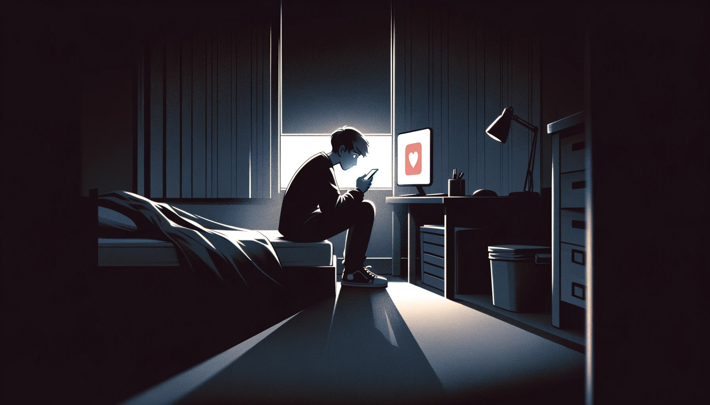
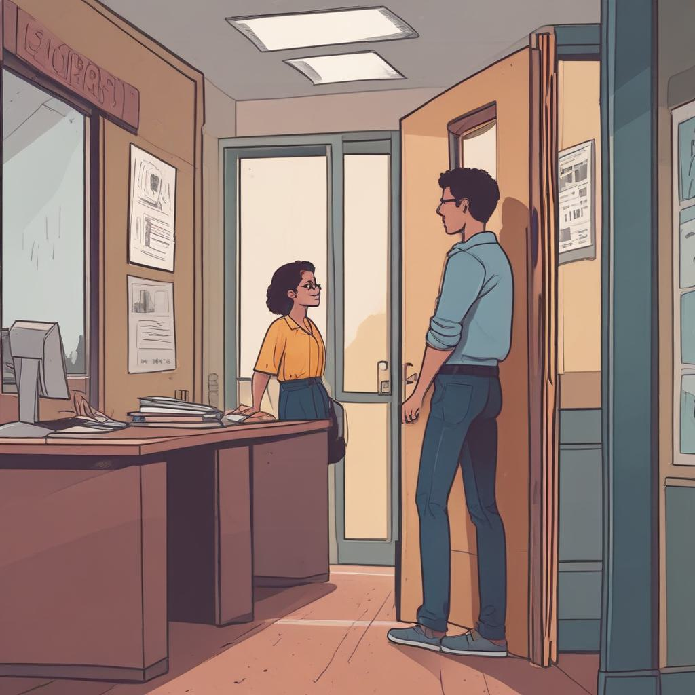

Scene 1: The Pressure

Students sit in a crowded lecture hall, faces strained and overwhelmed with notes and textbooks.
Scene 2: The Isolation
A student sits alone in their dorm room, scrolling through social media, feeling disconnected from friends.
Scene 3: Seeking Help
Another student hesitantly approaches a counselor's office, unsure but ready to talk about their struggles.
Scene 4: Finding Support
Students gather in a support group, sharing their experiences and offering encouragement to one another.
Scene 5: The Journey
A student is seen walking on campus, smiling and interacting with peers, showing signs of improved mental health.